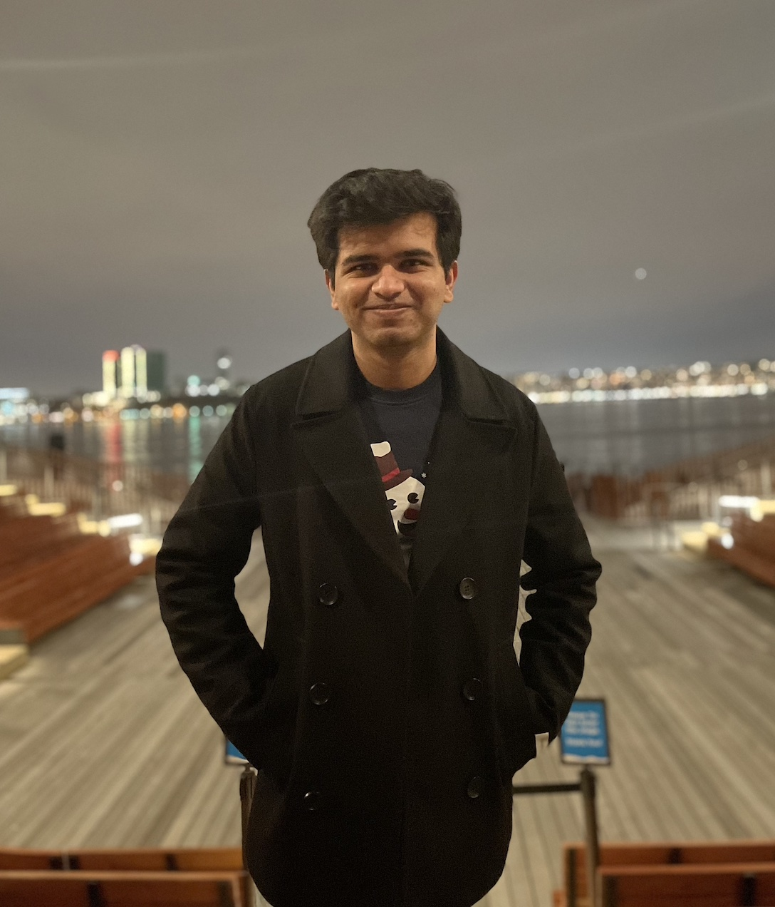
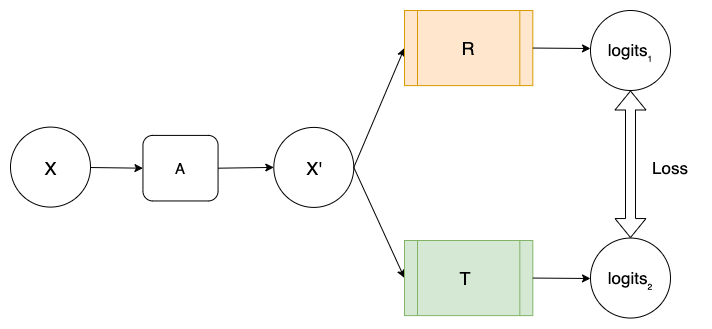
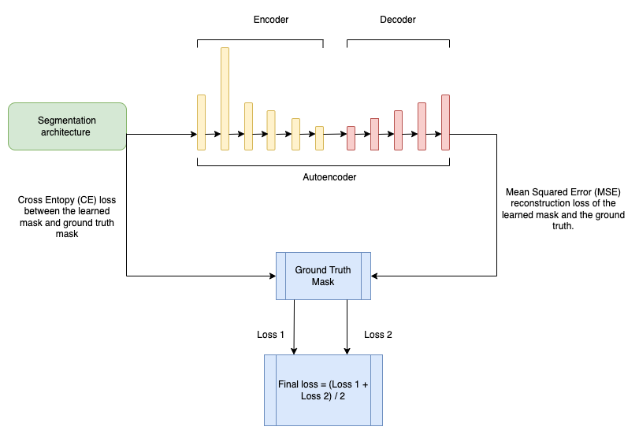
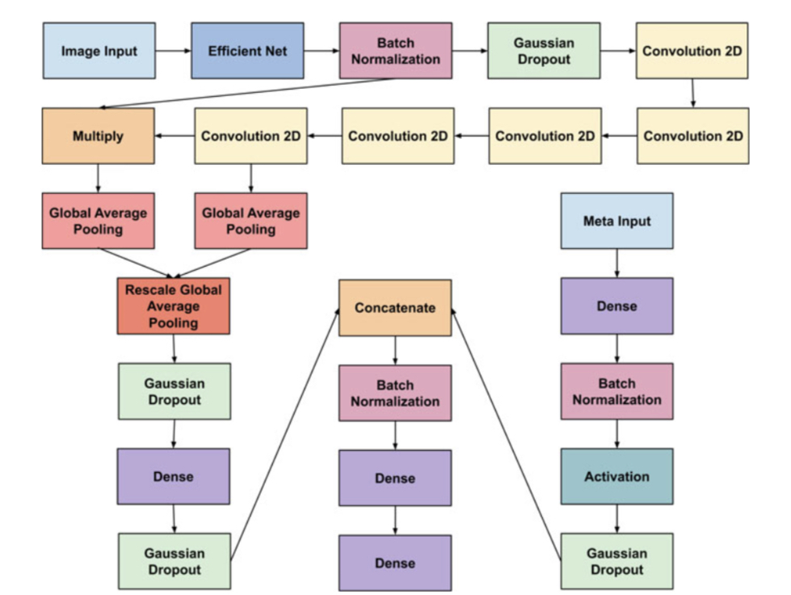

About |
|
I am a final year MS CS candidate at New York University. Currently, I am working as a Research Assistant under Prof. Jacopo Cirrone at NYU Center For Data Science. I am also a part of the organizing committee of NYU AI School 2023. My current research lies at the intersection of AI and healthcare, focusing on self-supervised learning, computer vision, resource-efficient learning, and dense prediction tasks. As of January 2023, I am also developing multimodal learning approaches for medical image analysis using images and clinical texts. Email / Google Scholar / Github / Linkedin Before joining NYU, I worked on deep-reinforcement learning-based automatic arm control, object detection and classification, low light imaging, and Simultaneous localization and mapping (SLAM) algorithms for autonomous rovers. These rovers were made per the required specifications for University Rover Challenge (URC), organized by The Mars Society and International Rover Design. Challenge (formerly, Indian Rover Design Challenge), organized by Mars Society South Asia (MSSA). We finished as international semi-finalists in URC 2020 and in the top 30 of the International Rover Design Challenge 2020. I led the AI subteam for URC 2020 and the CS and AI subsystem for International Rover Challenge 2020. I also co-founded the HultPrize Manipal University Jaipur chapter. HultPrize Manipal University Jaipur accelerated the startup incubation rate at Manipal University Jaipur, and also raised funds to feed the homeless kids during COVID and the Assam-Bihar 2020 floods. |
 |
Updates! |
Awards |
Teaching |
Research |
|

|
CASS: Cross Architectural Self-Supervision for Medical Image Analysis
Pranav Singh, Elena Sizikova, Jacopo Cirrone (Self-Supervised Learning Theory & Practice Workshop, NeurIPS 2022) Paper / Code Recent advances in deep learning and computer vision have reduced many barriers to automated medical image analy- sis, allowing algorithms to process label-free images and im- prove performance. However, existing techniques have ex- treme computational requirements and drop a lot of perfor- mance with a reduction in batch size or training epochs. This paper presents Cross Architectural - Self Supervision (CASS), a novel self-supervised learning approach that lever- ages Transformer and CNN simultaneously. Compared to the existing state of the art self-supervised learning approaches, we empirically show that CASS-trained CNNs and Trans- formers across four diverse datasets gained an average of 3.8% with 1% labeled data, 5.9% with 10% labeled data, and 10.131% with 100% labeled data while taking 69% less time. We also show that CASS is much more robust to changes in batch size and training epochs. Notably, one of the test datasets comprised histopathology slides of an autoimmune disease, a condition with minimal data that has been under- represented in medical imaging. |
|

|
A Data-Efficient Deep Learning Framework for Segmentation and Classification of Histopathology Images
Pranav Singh, Jacopo Cirrone (Medical Computer Vision Workshop, ECCV 2022) Paper / Code The current study of cell architecture of inflammation in histopathology images commonly performed for diagnosis and research purposes excludes a lot of information available on the biopsy slide. In autoimmune diseases, major outstanding research questions remain regarding which cell types participate in inflammation at the tissue level, and how they interact with each other. While these questions can be partially answered using traditional methods, artificial intelligence approaches for segmentation and classification provide a much more efficient method to understand the architecture of inflammation in autoimmune disease, holding a great promise for novel insights. In this paper, we empirically develop deep learning approaches that uses dermatomyositis biopsies of human tissue to detect and identify inflammatory cells. Our approach improves classification performance by 26% and segmentation performance by 5%. We also propose a novel post-processing autoencoder architecture that improves segmentation performance by an additional 3%. |
|

|
Classification of Melanoma Using Efficient Nets with Multiple Ensembles and Metadata
Vardan Agarwal, Harshit Jhalani, Pranav Singh, Rahul Dixit (ICCI-2020) Paper Melanoma is one of the most treacherous forms of cancer, and its early detection is paramount for the survival rate. It is caused by anomalous multiplication of skin cells, giving that area an unusual color. In this paper, we present a method for melanoma classification based on Efficient Nets, squeeze and excitation models, attention mechanisms, and ensembling. In this work, we consider different image sizes are utilized for different Efficient Nets, to act as the backbone of our models and this plays an important role in our proposed method. The feature maps are then passed to convolution layers with a Squeeze and Excitation structure, further followed by an attention mechanism. A separate branch for patient-level data is also used to improve the results. They are combined using two novel ensemble techniques: the majority mean ensemble and the absolute correlation ensemble, to give a final prediction. We also compare our results with the basic mean ensemble to prove their superiority. |